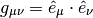
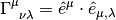

3. Mathematics¶
3.1. Linear Algebra¶
3.1.1. Tensor Product Space¶
 and
and  are elements of Hilbert space
are elements of Hilbert space  and . Tensor Product of and is denoted as
and . Tensor Product of and is denoted as  . This operation is linear and distributive.
. This operation is linear and distributive.
Tensor product space  is composed of all the linear combinations of all possible tensor products of elements in and .
is composed of all the linear combinations of all possible tensor products of elements in and .

3.1.1.2. Operators Applied to Tensor Product¶
Two operators  and works on and respectively applied to tensor product
and works on and respectively applied to tensor product

3.2. Differential Geometry¶
3.2.1. Metric¶
3.2.1.1. Definitions¶
Denote the basis in use as  , then the metric can be written as
, then the metric can be written as

if the basis satisfies
Inversed metric

3.2.1.2. How to calculate the metric¶
Let’s check the definition of metric again.
If we choose a basis , then a vector (at one certain point) in this coordinate system is

Then we can construct the expression of metric of this point under this coordinate system,

For example, in spherical coordinate system,
(1)
Now we have to find the basis under spherical coordinate system. Assume the basis is  . Choose some scale factors
. Choose some scale factors  . Then the basis is
. Then the basis is

etc. Then collect the terms in formula (1) is we get  , this is incomplete. So we check the derivative.
, this is incomplete. So we check the derivative.
![\mathrm d\vec x = \hat e_x (\mathrm dr \sin\theta\cos\phi+r\cos\theta\cos\phi\mathrm d\theta-r\sin\theta\sin\phi\mathrm d\phi)
\hat e_y (\mathrm dr\sin\theta\sin\phi+r\cos\theta\sin\phi\mathrm d\theta+r\sin\theta\cos\phi\mathrm d\phi)
\hat e_z (\mathrm dr\cos\theta-r\sin\theta\mathrm d\theta)
= \mathrm dr(\hat e_x\sin\theta\cos\phi +\hat e_y \sin\theta\sin\phi -\hat e_z \cos\theta)
\mathrm d\theta (\hat e_x\cos\theta\cos\phi +\hat e_y \cos\theta\sin\phi - \hat e_z \sin\theta)r
\mathrm d\phi (-\hat e_x\sin\phi +\hat e_y \cos\phi)r\sin\theta
=\hat e_r\mathrm dr+\hat e_\theta r\mathrm d\theta +\hat e_\phi r\sin\theta\mathrm d \phi](_images/math/ec03c5424d347b56e1739555f6594155bb3c4b98.png)
Once we reach here, the component ( ) of the point under the spherical coordinates system basis () at this point are clear, i.e.,
) of the point under the spherical coordinates system basis () at this point are clear, i.e.,
System Message: WARNING/2 (\begin{eqnarray} \mathrm d\vec x&=&\hat e_r\mathrm d r+\hat e_\theta r\mathrm d \theta+\hat e_\phi r\sin\theta \mathrm d\phi \\ &=&e_r\mathrm d r+e_\theta \mathrm d\theta+e_\phi \mathrm d\phi \end{eqnarray} )
latex exited with error [stdout] This is pdfTeX, Version 3.1415926-2.5-1.40.14 (TeX Live 2013) restricted \write18 enabled. entering extended mode (./math.tex LaTeX2e <2011/06/27> Babel <3.9f> and hyphenation patterns for 78 languages loaded. (/usr/local/texlive/2013/texmf-dist/tex/latex/base/article.cls Document Class: article 2007/10/19 v1.4h Standard LaTeX document class (/usr/local/texlive/2013/texmf-dist/tex/latex/base/size12.clo)) (/usr/local/texlive/2013/texmf-dist/tex/latex/base/inputenc.sty (/usr/local/texlive/2013/texmf-dist/tex/latex/ucs/utf8x.def)) (/usr/local/texlive/2013/texmf-dist/tex/latex/ucs/ucs.sty (/usr/local/texlive/2013/texmf-dist/tex/latex/ucs/data/uni-global.def)) (/usr/local/texlive/2013/texmf-dist/tex/latex/amsmath/amsmath.sty For additional information on amsmath, use the `?’ option. (/usr/local/texlive/2013/texmf-dist/tex/latex/amsmath/amstext.sty (/usr/local/texlive/2013/texmf-dist/tex/latex/amsmath/amsgen.sty)) (/usr/local/texlive/2013/texmf-dist/tex/latex/amsmath/amsbsy.sty) (/usr/local/texlive/2013/texmf-dist/tex/latex/amsmath/amsopn.sty)) (/usr/local/texlive/2013/texmf-dist/tex/latex/amscls/amsthm.sty) (/usr/local/texlive/2013/texmf-dist/tex/latex/amsfonts/amssymb.sty (/usr/local/texlive/2013/texmf-dist/tex/latex/amsfonts/amsfonts.sty)) (/usr/local/texlive/2013/texmf-dist/tex/latex/tools/bm.sty) (/usr/local/texlive/2013/texmf-dist/tex/latex/preview/preview.sty) (./math.aux) (/usr/local/texlive/2013/texmf-dist/tex/latex/ucs/ucsencs.def) Preview: Fontsize 12pt (/usr/local/texlive/2013/texmf-dist/tex/latex/amsfonts/umsa.fd) (/usr/local/texlive/2013/texmf-dist/tex/latex/amsfonts/umsb.fd) ! Missing \endgroup inserted. <inserted text> \endgroup l.19 \end{gather} ! Missing } inserted. <inserted text> } l.19 \end{gather} ! You can’t use `\halign’ in math mode. \eqnarray ... \let \\\@eqncr $$\everycr {}\halign to\displaywidth \bgroup \h... l.19 \end{gather} ! Missing number, treated as zero. <to be read again> \bgroup l.19 \end{gather} ! Illegal unit of measure (pt inserted). <to be read again> \bgroup l.19 \end{gather} ! Missing } inserted. <inserted text> } l.19 \end{gather} ! Missing $ inserted. <inserted text> $ l.19 \end{gather} ! You can’t use `macro parameter character #’ in math mode. \eqnarray ...g $\displaystyle \tabskip \z@skip {## }$\@eqnsel &\global \@eqcn... l.19 \end{gather} ! Missing { inserted. <inserted text> { l.19 \end{gather} ! Missing { inserted. <inserted text> { l.19 \end{gather} ! Missing $ inserted. <inserted text> $ l.19 \end{gather} ! Missing } inserted. <inserted text> } l.19 \end{gather} ! Missing } inserted. <inserted text> } l.19 \end{gather} ! You can’t use `macro parameter character #’ in restricted horizontal mode. \eqnarray ...e \hskip \tw@ \arraycolsep \hfil ${## }$\hfil &\global \@eqcnt \... l.19 \end{gather} ! Missing { inserted. <inserted text> { l.19 \end{gather} ! Extra alignment tab has been changed to \cr. <template> }$\hfill \endtemplate l.19 \end{gather} ! Missing } inserted. <inserted text> } l.19 \end{gather} ! Missing $ inserted. <inserted text> $ l.19 \end{gather} ! You can’t use `macro parameter character #’ in math mode. \eqnarray ... \tw@ \arraycolsep $\displaystyle {## }$\hfil \tabskip \@centeri... l.19 \end{gather} ! Missing { inserted. <inserted text> { l.19 \end{gather} ! Missing $ inserted. <inserted text> $ l.19 \end{gather} ! You can’t use `macro parameter character #’ in restricted horizontal mode. \eqnarray ...nt \thr@@ \hb@xt@ \z@ \bgroup \hss ## \egroup \tabskip \z@skip \cr l.19 \end{gather} ! Extra alignment tab has been changed to \cr. <template> }$\hfill \endtemplate l.19 \end{gather} ! Extra alignment tab has been changed to \cr. <template> }$\hfill \endtemplate l.19 \end{gather} ! LaTeX Error: Too many columns in eqnarray environment. See the LaTeX manual or LaTeX Companion for explanation. Type H <return> for immediate help. ... l.19 \end{gather} ! LaTeX Error: \begin{split} on input line 19 ended by \end{eqnarray}. See the LaTeX manual or LaTeX Companion for explanation. Type H <return> for immediate help. ... l.19 \end{gather} ! Missing $ inserted. <inserted text> $ l.19 \end{gather} ! Display math should end with $$. <to be read again> \endgroup l.19 \end{gather} ! Missing } inserted. <inserted text> } l.19 \end{gather} ! Missing { inserted. <inserted text> { l.19 \end{gather} ! Missing } inserted. <inserted text> } l.19 \end{gather} ! LaTeX Error: \begin{gather} on input line 14 ended by \end{split}. See the LaTeX manual or LaTeX Companion for explanation. Type H <return> for immediate help. ... l.19 \end{gather} ! Misplaced alignment tab character &. \math@cr@@@ ->\ifst@rred \nonumber \fi & \relax \make@display@tag \ifst@rred ... l.19 \end{gather} ! Misplaced \cr. \math@cr@@@ ...fi \global \advance \row@ \@ne \cr l.19 \end{gather} ! Misplaced \noalign. \math@cr@@ ... \iffalse }\fi \math@cr@@@ \noalign {\vskip #1\relax } l.19 \end{gather} ! Missing $ inserted. <inserted text> $ l.19 \end{gather} ! Missing } inserted. <inserted text> } l.19 \end{gather} ! Display math should end with $$. <to be read again> \vskip l.19 \end{gather} ! Extra }, or forgotten \endgroup. \math@cr@@ ...th@cr@@@ \noalign {\vskip #1\relax } l.19 \end{gather} ! Package amsmath Error: \begin{split} won’t work here. See the amsmath package documentation for explanation. Type H <return> for immediate help. ... l.19 \end{gather} ! Misplaced \cr. \math@cr@@@ ->\cr l.19 \end{gather} ! Extra }, or forgotten \endgroup. \gmeasure@ ...savetaglength@ \crcr #1\math@cr@@@ } }\restorecounters@ \if@fle... l.19 \end{gather} ! Extra }, or forgotten \endgroup. \gmeasure@ ...avetaglength@ \crcr #1\math@cr@@@ }} \restorecounters@ \if@fleq... l.19 \end{gather} ! Argument of \split has an extra }. <inserted text> \par l.19 \end{gather} Runaway argument? \collect@body \gather@split \begin {eqnarray} \mathrm d\vec x ! Paragraph ended before \split was complete. <to be read again> \par l.19 \end{gather} ! Missing $ inserted. <inserted text> $ l.19 \end{gather} ! Missing \endgroup inserted. <inserted text> \endgroup l.19 \end{gather} ! Missing \endgroup inserted. <inserted text> \endgroup l.19 \end{gather} ! Missing } inserted. <inserted text> } l.19 \end{gather} ! Extra }, or forgotten $. <recently read> } l.19 \end{gather} ! Missing number, treated as zero. <to be read again> \relax l.19 \end{gather} ! Illegal unit of measure (pt inserted). <to be read again> \relax l.19 \end{gather} ! Missing $ inserted. <inserted text> $ l.19 \end{gather} ! Extra alignment tab has been changed to \cr. <template> }}\place@tag@gather \endtemplate l.19 \end{gather} ! Missing number, treated as zero. <to be read again> \relax l.19 \end{gather} ! Illegal unit of measure (pt inserted). <to be read again> \relax l.19 \end{gather} ! Extra alignment tab has been changed to \cr. <template> }}\place@tag@gather \endtemplate l.19 \end{gather} ! Missing number, treated as zero. <to be read again> \relax l.19 \end{gather} ! Illegal unit of measure (pt inserted). <to be read again> \relax l.19 \end{gather} ! Extra alignment tab has been changed to \cr. <template> }}\place@tag@gather \endtemplate l.19 \end{gather} ! Missing number, treated as zero. <to be read again> \relax l.19 \end{gather} ! Illegal unit of measure (pt inserted). <to be read again> \relax l.19 \end{gather} Overfull \hbox (133.53938pt too wide) in alignment at lines 19–19 [] [] ! LaTeX Error: \begin{preview} on input line 13 ended by \end{eqnarray}. See the LaTeX manual or LaTeX Companion for explanation. Type H <return> for immediate help. ... l.19 \end{gather} ! Missing $ inserted. <inserted text> $ l.19 \end{gather} ! Display math should end with $$. <to be read again> \endgroup l.19 \end{gather} [1] ! Misplaced \crcr. \endsplit ->\crcr \egroup \egroup \iftagsleft@ \@xp \lendsplit@ \else \@xp \... l.19 \end{gather} ! Extra }, or forgotten \endgroup. \endsplit ->\crcr \egroup \egroup \iftagsleft@ \@xp \lendsplit@ \else \@xp \... l.19 \end{gather} ! Extra }, or forgotten \endgroup. \endsplit ->\crcr \egroup \egroup \iftagsleft@ \@xp \lendsplit@ \else \@xp \... l.19 \end{gather} ! LaTeX Error: \begin{preview} on input line 13 ended by \end{split}. See the LaTeX manual or LaTeX Companion for explanation. Type H <return> for immediate help. ... l.19 \end{gather} ! Missing $ inserted. <inserted text> $ l.19 \end{gather} ! Package amsmath Error: \begin{split} won’t work here. See the amsmath package documentation for explanation. Type H <return> for immediate help. ... l.19 \end{gather} ! Misplaced \cr. \math@cr@@@ ->\cr l.19 \end{gather} ! Misplaced \noalign. \math@cr@@ ... \iffalse }\fi \math@cr@@@ \noalign {\vskip #1\relax } l.19 \end{gather} ! Missing $ inserted. <inserted text> $ l.19 \end{gather} ! Missing } inserted. <inserted text> } l.19 \end{gather} ! Too many }’s. \math@cr@@ ...th@cr@@@ \noalign {\vskip #1\relax } l.19 \end{gather} ! Misplaced \noalign. \black@ #1->\noalign {\ifdim #1>\displaywidth \dimen@ \prevdepth \nointerlin... l.19 \end{gather} ! Too many }’s. \endgather ->\math@cr \black@ \totwidth@ \egroup $$\ignorespacesafterend l.19 \end{gather} ! LaTeX Error: \begin{document} ended by \end{gather}. See the LaTeX manual or LaTeX Companion for explanation. Type H <return> for immediate help. ... l.19 \end{gather} ! Missing $ inserted. <inserted text> $ l.19 \end{gather} ! Display math should end with $$. <to be read again> \endgroup l.19 \end{gather} ! Extra \endgroup. <recently read> \endgroup l.19 \end{gather} ! Extra \endgroup. \endpreview ->\ifhmode \unskip \fi \endgroup l.20 \end{preview} ! LaTeX Error: \begin{document} ended by \end{preview}. See the LaTeX manual or LaTeX Companion for explanation. Type H <return> for immediate help. ... l.20 \end{preview} ! Extra \endgroup. <recently read> \endgroup l.20 \end{preview} (./math.aux) ) (see the transcript file for additional information) Output written on math.dvi (1 page, 816 bytes). Transcript written on math.log.In this way, the metric tensor for spherical coordinates is
System Message: WARNING/2 (\begin{equation} g_{\mu\nu}=(e_\mu\cdot e_\nu)=\left(\begin{matrix} 1 &0&0 \\ 0& r^2&0 \\ 0&0& r^2\sin^2\theta \\ \end{matrix}\right) \end{equation} )
latex exited with error [stdout] This is pdfTeX, Version 3.1415926-2.5-1.40.14 (TeX Live 2013) restricted \write18 enabled. entering extended mode (./math.tex LaTeX2e <2011/06/27> Babel <3.9f> and hyphenation patterns for 78 languages loaded. (/usr/local/texlive/2013/texmf-dist/tex/latex/base/article.cls Document Class: article 2007/10/19 v1.4h Standard LaTeX document class (/usr/local/texlive/2013/texmf-dist/tex/latex/base/size12.clo)) (/usr/local/texlive/2013/texmf-dist/tex/latex/base/inputenc.sty (/usr/local/texlive/2013/texmf-dist/tex/latex/ucs/utf8x.def)) (/usr/local/texlive/2013/texmf-dist/tex/latex/ucs/ucs.sty (/usr/local/texlive/2013/texmf-dist/tex/latex/ucs/data/uni-global.def)) (/usr/local/texlive/2013/texmf-dist/tex/latex/amsmath/amsmath.sty For additional information on amsmath, use the `?’ option. (/usr/local/texlive/2013/texmf-dist/tex/latex/amsmath/amstext.sty (/usr/local/texlive/2013/texmf-dist/tex/latex/amsmath/amsgen.sty)) (/usr/local/texlive/2013/texmf-dist/tex/latex/amsmath/amsbsy.sty) (/usr/local/texlive/2013/texmf-dist/tex/latex/amsmath/amsopn.sty)) (/usr/local/texlive/2013/texmf-dist/tex/latex/amscls/amsthm.sty) (/usr/local/texlive/2013/texmf-dist/tex/latex/amsfonts/amssymb.sty (/usr/local/texlive/2013/texmf-dist/tex/latex/amsfonts/amsfonts.sty)) (/usr/local/texlive/2013/texmf-dist/tex/latex/tools/bm.sty) (/usr/local/texlive/2013/texmf-dist/tex/latex/preview/preview.sty) (./math.aux) (/usr/local/texlive/2013/texmf-dist/tex/latex/ucs/ucsencs.def) Preview: Fontsize 12pt (/usr/local/texlive/2013/texmf-dist/tex/latex/amsfonts/umsa.fd) (/usr/local/texlive/2013/texmf-dist/tex/latex/amsfonts/umsb.fd) ! LaTeX Error: Bad math environment delimiter. See the LaTeX manual or LaTeX Companion for explanation. Type H <return> for immediate help. ... l.22 \end{gather} ! You can’t use `\eqno’ in math mode. \endmathdisplay@a ...\df@tag \@empty \else \veqno \alt@tag \df@tag \fi \ifx ... l.22 \end{gather} ! Missing \endgroup inserted. <inserted text> \endgroup l.22 \end{gather} ! Missing } inserted. <inserted text> } l.22 \end{gather} ! LaTeX Error: \begin{split} on input line 22 ended by \end{equation}. See the LaTeX manual or LaTeX Companion for explanation. Type H <return> for immediate help. ... l.22 \end{gather} ! Missing $ inserted. <inserted text> $ l.22 \end{gather} ! Missing } inserted. <inserted text> } l.22 \end{gather} ! Missing \cr inserted. <inserted text> \cr l.22 \end{gather} ! Missing { inserted. <inserted text> { l.22 \end{gather} ! Missing $ inserted. <inserted text> $ l.22 \end{gather} ! Missing } inserted. <inserted text> } l.22 \end{gather} ! Missing { inserted. <inserted text> { l.22 \end{gather} ! Missing } inserted. <inserted text> } l.22 \end{gather} ! LaTeX Error: \begin{gather} on input line 14 ended by \end{split}. See the LaTeX manual or LaTeX Companion for explanation. Type H <return> for immediate help. ... l.22 \end{gather} ! Misplaced alignment tab character &. \math@cr@@@ ->\ifst@rred \nonumber \fi & \relax \make@display@tag \ifst@rred ... l.22 \end{gather} ! Misplaced \cr. \math@cr@@@ ...fi \global \advance \row@ \@ne \cr l.22 \end{gather} ! Misplaced \noalign. \math@cr@@ ... \iffalse }\fi \math@cr@@@ \noalign {\vskip #1\relax } l.22 \end{gather} ! Missing $ inserted. <inserted text> $ l.22 \end{gather} ! Missing } inserted. <inserted text> } l.22 \end{gather} ! Display math should end with $$. <to be read again> \vskip l.22 \end{gather} ! Extra }, or forgotten \endgroup. \math@cr@@ ...th@cr@@@ \noalign {\vskip #1\relax } l.22 \end{gather} ! Package amsmath Error: \begin{split} won’t work here. See the amsmath package documentation for explanation. Type H <return> for immediate help. ... l.22 \end{gather} ! Misplaced \cr. \math@cr@@@ ->\cr l.22 \end{gather} ! Extra }, or forgotten \endgroup. \gmeasure@ ...savetaglength@ \crcr #1\math@cr@@@ } }\restorecounters@ \if@fle... l.22 \end{gather} ! Extra }, or forgotten \endgroup. \gmeasure@ ...avetaglength@ \crcr #1\math@cr@@@ }} \restorecounters@ \if@fleq... l.22 \end{gather} ! Argument of \split has an extra }. <inserted text> \par l.22 \end{gather} Runaway argument? \collect@body \gather@split \begin {equation} g_{\mu \nu }=(e_\mu \cdot \ETC. ! Paragraph ended before \split was complete. <to be read again> \par l.22 \end{gather} ! Missing $ inserted. <inserted text> $ l.22 \end{gather} ! Missing \endgroup inserted. <inserted text> \endgroup l.22 \end{gather} ! Missing \endgroup inserted. <inserted text> \endgroup l.22 \end{gather} ! Missing } inserted. <inserted text> } l.22 \end{gather} ! Extra }, or forgotten $. <recently read> } l.22 \end{gather} ! Missing number, treated as zero. <to be read again> \relax l.22 \end{gather} ! Illegal unit of measure (pt inserted). <to be read again> \relax l.22 \end{gather} ! Missing $ inserted. <inserted text> $ l.22 \end{gather} ! Extra alignment tab has been changed to \cr. <template> }}\place@tag@gather \endtemplate l.22 \end{gather} ! Missing number, treated as zero. <to be read again> \relax l.22 \end{gather} ! Illegal unit of measure (pt inserted). <to be read again> \relax l.22 \end{gather} ! Missing $ inserted. <inserted text> $ l.22 \end{gather} ! Extra }, or forgotten $. <template> } }\place@tag@gather \endtemplate l.22 \end{gather} ! Extra }, or forgotten $. <template> }} \place@tag@gather \endtemplate l.22 \end{gather} ! Missing $ inserted. <inserted text> $ l.22 \end{gather} ! Missing } inserted. <inserted text> } l.22 \end{gather} ! Missing } inserted. <inserted text> } l.22 \end{gather} ! Extra alignment tab has been changed to \cr. <recently read> \endtemplate l.22 \end{gather} ! Missing number, treated as zero. <to be read again> \relax l.22 \end{gather} ! Illegal unit of measure (pt inserted). <to be read again> \relax l.22 \end{gather} ! Extra alignment tab has been changed to \cr. <template> }}\place@tag@gather \endtemplate l.22 \end{gather} ! Missing number, treated as zero. <to be read again> \relax l.22 \end{gather} ! Illegal unit of measure (pt inserted). <to be read again> \relax l.22 \end{gather} Overfull \hbox (39.3498pt too wide) in alignment at lines 22–22 [] [] ! Extra }, or forgotten \endgroup. \endarray ->\crcr \egroup \egroup l.22 \end{gather} ! LaTeX Error: \begin{preview} on input line 13 ended by \end{matrix}. See the LaTeX manual or LaTeX Companion for explanation. Type H <return> for immediate help. ... l.22 \end{gather} [1] ! Missing $ inserted. <inserted text> $ l.22 \end{gather} ! Extra \right. <argument> ...in ^2\theta \\ \end {matrix}\right ) \end {equation}\end {spli... l.22 \end{gather} ! LaTeX Error: \begin{preview} on input line 13 ended by \end{equation}. See the LaTeX manual or LaTeX Companion for explanation. Type H <return> for immediate help. ... l.22 \end{gather} ! Missing $ inserted. <inserted text> $ l.22 \end{gather} ! Misplaced \crcr. \endsplit ->\crcr \egroup \egroup \iftagsleft@ \@xp \lendsplit@ \else \@xp \... l.22 \end{gather} ! Too many }’s. \endsplit ->\crcr \egroup \egroup \iftagsleft@ \@xp \lendsplit@ \else \@xp \... l.22 \end{gather} ! Too many }’s. \endsplit ->\crcr \egroup \egroup \iftagsleft@ \@xp \lendsplit@ \else \@xp \... l.22 \end{gather} ! LaTeX Error: \begin{document} ended by \end{split}. See the LaTeX manual or LaTeX Companion for explanation. Type H <return> for immediate help. ... l.22 \end{gather} ! Extra \endgroup. <recently read> \endgroup l.22 \end{gather} ! Package amsmath Error: \begin{split} won’t work here. See the amsmath package documentation for explanation. Type H <return> for immediate help. ... l.22 \end{gather} ! Misplaced \cr. \math@cr@@@ ->\cr l.22 \end{gather} ! Misplaced \noalign. \math@cr@@ ... \iffalse }\fi \math@cr@@@ \noalign {\vskip #1\relax } l.22 \end{gather} Underfull \hbox (badness 10000) in paragraph at lines 22–22 ! Misplaced \noalign. \black@ #1->\noalign {\ifdim #1>\displaywidth \dimen@ \prevdepth \nointerlin... l.22 \end{gather} ! Too many }’s. \endgather ->\math@cr \black@ \totwidth@ \egroup $$\ignorespacesafterend l.22 \end{gather} ! LaTeX Error: \begin{document} ended by \end{gather}. See the LaTeX manual or LaTeX Companion for explanation. Type H <return> for immediate help. ... l.22 \end{gather} ! Missing $ inserted. <inserted text> $ l.22 \end{gather} ! Display math should end with $$. <to be read again> \endgroup l.22 \end{gather} ! Extra \endgroup. <recently read> \endgroup l.22 \end{gather} ! Extra \endgroup. \endpreview ->\ifhmode \unskip \fi \endgroup l.23 \end{preview} ! LaTeX Error: \begin{document} ended by \end{preview}. See the LaTeX manual or LaTeX Companion for explanation. Type H <return> for immediate help. ... l.23 \end{preview} ! Extra \endgroup. <recently read> \endgroup l.23 \end{preview} (./math.aux) ) (see the transcript file for additional information) Output written on math.dvi (1 page, 764 bytes). Transcript written on math.log.3.2.2. Connection¶
First class connection can be calculated

Second class connection isfootnote{Kevin E. Cahill}
![[\mu\nu,\iota]=g_{\iota\mu}\Gamma^\mu_{\phantom{\mu}\nu\lambda}](_images/math/cc2a19338326e06ffc00170a19c64f74c11b8dd8.png)
3.2.3. Gradient, Curl, Divergence, etc¶
3.2.3.1. Gradient¶

3.2.3.2. Curl¶
For an anti-symmetric tensor, 
System Message: WARNING/2 (\begin{eqnarray} \mathrm{Curl}_{\mu\nu\tau}(a_{\mu\nu})&\equiv& a_{\mu\nu;\tau}+a_{\nu\tau;\mu}+a_{\tau\mu;\nu} \\ &=&a_{\mu\nu,\tau}+a_{\nu\tau,\mu}+a_{\tau\mu,\nu} \end{eqnarray} )
latex exited with error [stdout] This is pdfTeX, Version 3.1415926-2.5-1.40.14 (TeX Live 2013) restricted \write18 enabled. entering extended mode (./math.tex LaTeX2e <2011/06/27> Babel <3.9f> and hyphenation patterns for 78 languages loaded. (/usr/local/texlive/2013/texmf-dist/tex/latex/base/article.cls Document Class: article 2007/10/19 v1.4h Standard LaTeX document class (/usr/local/texlive/2013/texmf-dist/tex/latex/base/size12.clo)) (/usr/local/texlive/2013/texmf-dist/tex/latex/base/inputenc.sty (/usr/local/texlive/2013/texmf-dist/tex/latex/ucs/utf8x.def)) (/usr/local/texlive/2013/texmf-dist/tex/latex/ucs/ucs.sty (/usr/local/texlive/2013/texmf-dist/tex/latex/ucs/data/uni-global.def)) (/usr/local/texlive/2013/texmf-dist/tex/latex/amsmath/amsmath.sty For additional information on amsmath, use the `?’ option. (/usr/local/texlive/2013/texmf-dist/tex/latex/amsmath/amstext.sty (/usr/local/texlive/2013/texmf-dist/tex/latex/amsmath/amsgen.sty)) (/usr/local/texlive/2013/texmf-dist/tex/latex/amsmath/amsbsy.sty) (/usr/local/texlive/2013/texmf-dist/tex/latex/amsmath/amsopn.sty)) (/usr/local/texlive/2013/texmf-dist/tex/latex/amscls/amsthm.sty) (/usr/local/texlive/2013/texmf-dist/tex/latex/amsfonts/amssymb.sty (/usr/local/texlive/2013/texmf-dist/tex/latex/amsfonts/amsfonts.sty)) (/usr/local/texlive/2013/texmf-dist/tex/latex/tools/bm.sty) (/usr/local/texlive/2013/texmf-dist/tex/latex/preview/preview.sty) (./math.aux) (/usr/local/texlive/2013/texmf-dist/tex/latex/ucs/ucsencs.def) Preview: Fontsize 12pt (/usr/local/texlive/2013/texmf-dist/tex/latex/amsfonts/umsa.fd) (/usr/local/texlive/2013/texmf-dist/tex/latex/amsfonts/umsb.fd) ! Missing \endgroup inserted. <inserted text> \endgroup l.19 \end{gather} ! Missing } inserted. <inserted text> } l.19 \end{gather} ! You can’t use `\halign’ in math mode. \eqnarray ... \let \\\@eqncr $$\everycr {}\halign to\displaywidth \bgroup \h... l.19 \end{gather} ! Missing number, treated as zero. <to be read again> \bgroup l.19 \end{gather} ! Illegal unit of measure (pt inserted). <to be read again> \bgroup l.19 \end{gather} ! Missing } inserted. <inserted text> } l.19 \end{gather} ! Missing $ inserted. <inserted text> $ l.19 \end{gather} ! You can’t use `macro parameter character #’ in math mode. \eqnarray ...g $\displaystyle \tabskip \z@skip {## }$\@eqnsel &\global \@eqcn... l.19 \end{gather} ! Missing { inserted. <inserted text> { l.19 \end{gather} ! Missing { inserted. <inserted text> { l.19 \end{gather} ! Missing $ inserted. <inserted text> $ l.19 \end{gather} ! Missing } inserted. <inserted text> } l.19 \end{gather} ! Missing } inserted. <inserted text> } l.19 \end{gather} ! You can’t use `macro parameter character #’ in restricted horizontal mode. \eqnarray ...e \hskip \tw@ \arraycolsep \hfil ${## }$\hfil &\global \@eqcnt \... l.19 \end{gather} ! Missing { inserted. <inserted text> { l.19 \end{gather} ! Extra alignment tab has been changed to \cr. <template> }$\hfill \endtemplate l.19 \end{gather} ! Missing } inserted. <inserted text> } l.19 \end{gather} ! Missing $ inserted. <inserted text> $ l.19 \end{gather} ! You can’t use `macro parameter character #’ in math mode. \eqnarray ... \tw@ \arraycolsep $\displaystyle {## }$\hfil \tabskip \@centeri... l.19 \end{gather} ! Missing { inserted. <inserted text> { l.19 \end{gather} ! Missing $ inserted. <inserted text> $ l.19 \end{gather} ! You can’t use `macro parameter character #’ in restricted horizontal mode. \eqnarray ...nt \thr@@ \hb@xt@ \z@ \bgroup \hss ## \egroup \tabskip \z@skip \cr l.19 \end{gather} ! Extra alignment tab has been changed to \cr. <template> }$\hfill \endtemplate l.19 \end{gather} ! Extra alignment tab has been changed to \cr. <template> }$\hfill \endtemplate l.19 \end{gather} ! LaTeX Error: Too many columns in eqnarray environment. See the LaTeX manual or LaTeX Companion for explanation. Type H <return> for immediate help. ... l.19 \end{gather} ! LaTeX Error: \begin{split} on input line 19 ended by \end{eqnarray}. See the LaTeX manual or LaTeX Companion for explanation. Type H <return> for immediate help. ... l.19 \end{gather} ! Missing $ inserted. <inserted text> $ l.19 \end{gather} ! Display math should end with $$. <to be read again> \endgroup l.19 \end{gather} ! Missing } inserted. <inserted text> } l.19 \end{gather} ! Missing { inserted. <inserted text> { l.19 \end{gather} ! Missing } inserted. <inserted text> } l.19 \end{gather} ! LaTeX Error: \begin{gather} on input line 14 ended by \end{split}. See the LaTeX manual or LaTeX Companion for explanation. Type H <return> for immediate help. ... l.19 \end{gather} ! Misplaced alignment tab character &. \math@cr@@@ ->\ifst@rred \nonumber \fi & \relax \make@display@tag \ifst@rred ... l.19 \end{gather} ! Misplaced \cr. \math@cr@@@ ...fi \global \advance \row@ \@ne \cr l.19 \end{gather} ! Misplaced \noalign. \math@cr@@ ... \iffalse }\fi \math@cr@@@ \noalign {\vskip #1\relax } l.19 \end{gather} ! Missing $ inserted. <inserted text> $ l.19 \end{gather} ! Missing } inserted. <inserted text> } l.19 \end{gather} ! Display math should end with $$. <to be read again> \vskip l.19 \end{gather} ! Extra }, or forgotten \endgroup. \math@cr@@ ...th@cr@@@ \noalign {\vskip #1\relax } l.19 \end{gather} ! Package amsmath Error: \begin{split} won’t work here. See the amsmath package documentation for explanation. Type H <return> for immediate help. ... l.19 \end{gather} ! Misplaced \cr. \math@cr@@@ ->\cr l.19 \end{gather} ! Extra }, or forgotten \endgroup. \gmeasure@ ...savetaglength@ \crcr #1\math@cr@@@ } }\restorecounters@ \if@fle... l.19 \end{gather} ! Extra }, or forgotten \endgroup. \gmeasure@ ...avetaglength@ \crcr #1\math@cr@@@ }} \restorecounters@ \if@fleq... l.19 \end{gather} ! Argument of \split has an extra }. <inserted text> \par l.19 \end{gather} Runaway argument? \collect@body \gather@split \begin {eqnarray} \mathrm {Curl}_{\mu \nu \ETC. ! Paragraph ended before \split was complete. <to be read again> \par l.19 \end{gather} ! Missing $ inserted. <inserted text> $ l.19 \end{gather} ! Missing \endgroup inserted. <inserted text> \endgroup l.19 \end{gather} ! Missing \endgroup inserted. <inserted text> \endgroup l.19 \end{gather} ! Missing } inserted. <inserted text> } l.19 \end{gather} ! Extra }, or forgotten $. <recently read> } l.19 \end{gather} ! Missing number, treated as zero. <to be read again> \relax l.19 \end{gather} ! Illegal unit of measure (pt inserted). <to be read again> \relax l.19 \end{gather} ! Missing $ inserted. <inserted text> $ l.19 \end{gather} ! Missing $ inserted. <inserted text> $ l.19 \end{gather} ! Extra }, or forgotten $. <template> } }\place@tag@gather \endtemplate l.19 \end{gather} ! Extra }, or forgotten $. <template> }} \place@tag@gather \endtemplate l.19 \end{gather} ! Missing $ inserted. <inserted text> $ l.19 \end{gather} ! Missing } inserted. <inserted text> } l.19 \end{gather} ! Missing } inserted. <inserted text> } l.19 \end{gather} ! Extra alignment tab has been changed to \cr. <recently read> \endtemplate l.19 \end{gather} ! Missing number, treated as zero. <to be read again> \relax l.19 \end{gather} ! Illegal unit of measure (pt inserted). <to be read again> \relax l.19 \end{gather} ! Extra alignment tab has been changed to \cr. <template> }}\place@tag@gather \endtemplate l.19 \end{gather} ! Missing number, treated as zero. <to be read again> \relax l.19 \end{gather} ! Illegal unit of measure (pt inserted). <to be read again> \relax l.19 \end{gather} ! Extra alignment tab has been changed to \cr. <template> }}\place@tag@gather \endtemplate l.19 \end{gather} ! Missing number, treated as zero. <to be read again> \relax l.19 \end{gather} ! Illegal unit of measure (pt inserted). <to be read again> \relax l.19 \end{gather} Overfull \hbox (99.56393pt too wide) in alignment at lines 19–19 [] [] ! LaTeX Error: \begin{preview} on input line 13 ended by \end{eqnarray}. See the LaTeX manual or LaTeX Companion for explanation. Type H <return> for immediate help. ... l.19 \end{gather} ! Missing $ inserted. <inserted text> $ l.19 \end{gather} ! Display math should end with $$. <to be read again> \endgroup l.19 \end{gather} [1] ! Misplaced \crcr. \endsplit ->\crcr \egroup \egroup \iftagsleft@ \@xp \lendsplit@ \else \@xp \... l.19 \end{gather} ! Extra }, or forgotten \endgroup. \endsplit ->\crcr \egroup \egroup \iftagsleft@ \@xp \lendsplit@ \else \@xp \... l.19 \end{gather} ! Extra }, or forgotten \endgroup. \endsplit ->\crcr \egroup \egroup \iftagsleft@ \@xp \lendsplit@ \else \@xp \... l.19 \end{gather} ! LaTeX Error: \begin{preview} on input line 13 ended by \end{split}. See the LaTeX manual or LaTeX Companion for explanation. Type H <return> for immediate help. ... l.19 \end{gather} ! Missing $ inserted. <inserted text> $ l.19 \end{gather} ! Package amsmath Error: \begin{split} won’t work here. See the amsmath package documentation for explanation. Type H <return> for immediate help. ... l.19 \end{gather} ! Misplaced \cr. \math@cr@@@ ->\cr l.19 \end{gather} ! Misplaced \noalign. \math@cr@@ ... \iffalse }\fi \math@cr@@@ \noalign {\vskip #1\relax } l.19 \end{gather} ! Missing $ inserted. <inserted text> $ l.19 \end{gather} ! Missing } inserted. <inserted text> } l.19 \end{gather} ! Too many }’s. \math@cr@@ ...th@cr@@@ \noalign {\vskip #1\relax } l.19 \end{gather} ! Misplaced \noalign. \black@ #1->\noalign {\ifdim #1>\displaywidth \dimen@ \prevdepth \nointerlin... l.19 \end{gather} ! Too many }’s. \endgather ->\math@cr \black@ \totwidth@ \egroup $$\ignorespacesafterend l.19 \end{gather} ! LaTeX Error: \begin{document} ended by \end{gather}. See the LaTeX manual or LaTeX Companion for explanation. Type H <return> for immediate help. ... l.19 \end{gather} ! Missing $ inserted. <inserted text> $ l.19 \end{gather} ! Display math should end with $$. <to be read again> \endgroup l.19 \end{gather} ! Extra \endgroup. <recently read> \endgroup l.19 \end{gather} ! Extra \endgroup. \endpreview ->\ifhmode \unskip \fi \endgroup l.20 \end{preview} ! LaTeX Error: \begin{document} ended by \end{preview}. See the LaTeX manual or LaTeX Companion for explanation. Type H <return> for immediate help. ... l.20 \end{preview} ! Extra \endgroup. <recently read> \endgroup l.20 \end{preview} (./math.aux) ) (see the transcript file for additional information) Output written on math.dvi (1 page, 816 bytes). Transcript written on math.log.3.2.3.3. Divergence¶
System Message: WARNING/2 (\begin{eqnarray} \mathrm{div}_\nu(a^{\mu\nu})&\equiv& a^{\mu\nu}_{\phantom{\mu\nu};\nu}=\frac{\partial a^{\mu\nu}}{\partial x^\nu}+\Gamma^\mu_{\nu\tau}a^{\tau\nu}+\Gamma^\nu_{\nu\tau}a^{\mu\tau} \\ &=&\frac1{\sqrt{-g}}\frac{\partial}{\partial x^\nu}(\sqrt{-g}a^{\mu\nu})+\Gamma^\mu_{\nu\lambda}a^{\nu\lambda} \end{eqnarray} )
latex exited with error [stdout] This is pdfTeX, Version 3.1415926-2.5-1.40.14 (TeX Live 2013) restricted \write18 enabled. entering extended mode (./math.tex LaTeX2e <2011/06/27> Babel <3.9f> and hyphenation patterns for 78 languages loaded. (/usr/local/texlive/2013/texmf-dist/tex/latex/base/article.cls Document Class: article 2007/10/19 v1.4h Standard LaTeX document class (/usr/local/texlive/2013/texmf-dist/tex/latex/base/size12.clo)) (/usr/local/texlive/2013/texmf-dist/tex/latex/base/inputenc.sty (/usr/local/texlive/2013/texmf-dist/tex/latex/ucs/utf8x.def)) (/usr/local/texlive/2013/texmf-dist/tex/latex/ucs/ucs.sty (/usr/local/texlive/2013/texmf-dist/tex/latex/ucs/data/uni-global.def)) (/usr/local/texlive/2013/texmf-dist/tex/latex/amsmath/amsmath.sty For additional information on amsmath, use the `?’ option. (/usr/local/texlive/2013/texmf-dist/tex/latex/amsmath/amstext.sty (/usr/local/texlive/2013/texmf-dist/tex/latex/amsmath/amsgen.sty)) (/usr/local/texlive/2013/texmf-dist/tex/latex/amsmath/amsbsy.sty) (/usr/local/texlive/2013/texmf-dist/tex/latex/amsmath/amsopn.sty)) (/usr/local/texlive/2013/texmf-dist/tex/latex/amscls/amsthm.sty) (/usr/local/texlive/2013/texmf-dist/tex/latex/amsfonts/amssymb.sty (/usr/local/texlive/2013/texmf-dist/tex/latex/amsfonts/amsfonts.sty)) (/usr/local/texlive/2013/texmf-dist/tex/latex/tools/bm.sty) (/usr/local/texlive/2013/texmf-dist/tex/latex/preview/preview.sty) (./math.aux) (/usr/local/texlive/2013/texmf-dist/tex/latex/ucs/ucsencs.def) Preview: Fontsize 12pt (/usr/local/texlive/2013/texmf-dist/tex/latex/amsfonts/umsa.fd) (/usr/local/texlive/2013/texmf-dist/tex/latex/amsfonts/umsb.fd) ! Missing \endgroup inserted. <inserted text> \endgroup l.19 \end{gather} ! Missing } inserted. <inserted text> } l.19 \end{gather} ! You can’t use `\halign’ in math mode. \eqnarray ... \let \\\@eqncr $$\everycr {}\halign to\displaywidth \bgroup \h... l.19 \end{gather} ! Missing number, treated as zero. <to be read again> \bgroup l.19 \end{gather} ! Illegal unit of measure (pt inserted). <to be read again> \bgroup l.19 \end{gather} ! Missing } inserted. <inserted text> } l.19 \end{gather} ! Missing $ inserted. <inserted text> $ l.19 \end{gather} ! You can’t use `macro parameter character #’ in math mode. \eqnarray ...g $\displaystyle \tabskip \z@skip {## }$\@eqnsel &\global \@eqcn... l.19 \end{gather} ! Missing { inserted. <inserted text> { l.19 \end{gather} ! Missing { inserted. <inserted text> { l.19 \end{gather} ! Missing $ inserted. <inserted text> $ l.19 \end{gather} ! Missing } inserted. <inserted text> } l.19 \end{gather} ! Missing } inserted. <inserted text> } l.19 \end{gather} ! You can’t use `macro parameter character #’ in restricted horizontal mode. \eqnarray ...e \hskip \tw@ \arraycolsep \hfil ${## }$\hfil &\global \@eqcnt \... l.19 \end{gather} ! Missing { inserted. <inserted text> { l.19 \end{gather} ! Extra alignment tab has been changed to \cr. <template> }$\hfill \endtemplate l.19 \end{gather} ! Missing } inserted. <inserted text> } l.19 \end{gather} ! Missing $ inserted. <inserted text> $ l.19 \end{gather} ! You can’t use `macro parameter character #’ in math mode. \eqnarray ... \tw@ \arraycolsep $\displaystyle {## }$\hfil \tabskip \@centeri... l.19 \end{gather} ! Missing { inserted. <inserted text> { l.19 \end{gather} ! Missing $ inserted. <inserted text> $ l.19 \end{gather} ! You can’t use `macro parameter character #’ in restricted horizontal mode. \eqnarray ...nt \thr@@ \hb@xt@ \z@ \bgroup \hss ## \egroup \tabskip \z@skip \cr l.19 \end{gather} ! Extra alignment tab has been changed to \cr. <template> }$\hfill \endtemplate l.19 \end{gather} ! Extra alignment tab has been changed to \cr. <template> }$\hfill \endtemplate l.19 \end{gather} ! LaTeX Error: Too many columns in eqnarray environment. See the LaTeX manual or LaTeX Companion for explanation. Type H <return> for immediate help. ... l.19 \end{gather} ! LaTeX Error: \begin{split} on input line 19 ended by \end{eqnarray}. See the LaTeX manual or LaTeX Companion for explanation. Type H <return> for immediate help. ... l.19 \end{gather} ! Missing $ inserted. <inserted text> $ l.19 \end{gather} ! Display math should end with $$. <to be read again> \endgroup l.19 \end{gather} ! Missing } inserted. <inserted text> } l.19 \end{gather} ! Missing { inserted. <inserted text> { l.19 \end{gather} ! Missing } inserted. <inserted text> } l.19 \end{gather} ! LaTeX Error: \begin{gather} on input line 14 ended by \end{split}. See the LaTeX manual or LaTeX Companion for explanation. Type H <return> for immediate help. ... l.19 \end{gather} ! Misplaced alignment tab character &. \math@cr@@@ ->\ifst@rred \nonumber \fi & \relax \make@display@tag \ifst@rred ... l.19 \end{gather} ! Misplaced \cr. \math@cr@@@ ...fi \global \advance \row@ \@ne \cr l.19 \end{gather} ! Misplaced \noalign. \math@cr@@ ... \iffalse }\fi \math@cr@@@ \noalign {\vskip #1\relax } l.19 \end{gather} ! Missing $ inserted. <inserted text> $ l.19 \end{gather} ! Missing } inserted. <inserted text> } l.19 \end{gather} ! Display math should end with $$. <to be read again> \vskip l.19 \end{gather} ! Extra }, or forgotten \endgroup. \math@cr@@ ...th@cr@@@ \noalign {\vskip #1\relax } l.19 \end{gather} ! Package amsmath Error: \begin{split} won’t work here. See the amsmath package documentation for explanation. Type H <return> for immediate help. ... l.19 \end{gather} ! Misplaced \cr. \math@cr@@@ ->\cr l.19 \end{gather} ! Extra }, or forgotten \endgroup. \gmeasure@ ...savetaglength@ \crcr #1\math@cr@@@ } }\restorecounters@ \if@fle... l.19 \end{gather} ! Extra }, or forgotten \endgroup. \gmeasure@ ...avetaglength@ \crcr #1\math@cr@@@ }} \restorecounters@ \if@fleq... l.19 \end{gather} ! Argument of \split has an extra }. <inserted text> \par l.19 \end{gather} Runaway argument? \collect@body \gather@split \begin {eqnarray} \mathrm {div}_\nu (a^{\mu \ETC. ! Paragraph ended before \split was complete. <to be read again> \par l.19 \end{gather} ! Missing $ inserted. <inserted text> $ l.19 \end{gather} ! Missing \endgroup inserted. <inserted text> \endgroup l.19 \end{gather} ! Missing \endgroup inserted. <inserted text> \endgroup l.19 \end{gather} ! Missing } inserted. <inserted text> } l.19 \end{gather} ! Extra }, or forgotten $. <recently read> } l.19 \end{gather} ! Missing number, treated as zero. <to be read again> \relax l.19 \end{gather} ! Illegal unit of measure (pt inserted). <to be read again> \relax l.19 \end{gather} ! Missing $ inserted. <inserted text> $ l.19 \end{gather} ! Missing $ inserted. <inserted text> $ l.19 \end{gather} ! Extra }, or forgotten $. <template> } }\place@tag@gather \endtemplate l.19 \end{gather} ! Extra }, or forgotten $. <template> }} \place@tag@gather \endtemplate l.19 \end{gather} ! Missing $ inserted. <inserted text> $ l.19 \end{gather} ! Missing } inserted. <inserted text> } l.19 \end{gather} ! Missing } inserted. <inserted text> } l.19 \end{gather} ! Extra alignment tab has been changed to \cr. <recently read> \endtemplate l.19 \end{gather} ! Missing number, treated as zero. <to be read again> \relax l.19 \end{gather} ! Illegal unit of measure (pt inserted). <to be read again> \relax l.19 \end{gather} ! Extra alignment tab has been changed to \cr. <template> }}\place@tag@gather \endtemplate l.19 \end{gather} ! Missing number, treated as zero. <to be read again> \relax l.19 \end{gather} ! Illegal unit of measure (pt inserted). <to be read again> \relax l.19 \end{gather} ! Extra alignment tab has been changed to \cr. <template> }}\place@tag@gather \endtemplate l.19 \end{gather} ! Missing number, treated as zero. <to be read again> \relax l.19 \end{gather} ! Illegal unit of measure (pt inserted). <to be read again> \relax l.19 \end{gather} Overfull \hbox (161.05388pt too wide) in alignment at lines 19–19 [] [] ! LaTeX Error: \begin{preview} on input line 13 ended by \end{eqnarray}. See the LaTeX manual or LaTeX Companion for explanation. Type H <return> for immediate help. ... l.19 \end{gather} ! Missing $ inserted. <inserted text> $ l.19 \end{gather} ! Display math should end with $$. <to be read again> \endgroup l.19 \end{gather} [1] ! Misplaced \crcr. \endsplit ->\crcr \egroup \egroup \iftagsleft@ \@xp \lendsplit@ \else \@xp \... l.19 \end{gather} ! Extra }, or forgotten \endgroup. \endsplit ->\crcr \egroup \egroup \iftagsleft@ \@xp \lendsplit@ \else \@xp \... l.19 \end{gather} ! Extra }, or forgotten \endgroup. \endsplit ->\crcr \egroup \egroup \iftagsleft@ \@xp \lendsplit@ \else \@xp \... l.19 \end{gather} ! LaTeX Error: \begin{preview} on input line 13 ended by \end{split}. See the LaTeX manual or LaTeX Companion for explanation. Type H <return> for immediate help. ... l.19 \end{gather} ! Missing $ inserted. <inserted text> $ l.19 \end{gather} ! Package amsmath Error: \begin{split} won’t work here. See the amsmath package documentation for explanation. Type H <return> for immediate help. ... l.19 \end{gather} ! Misplaced \cr. \math@cr@@@ ->\cr l.19 \end{gather} ! Misplaced \noalign. \math@cr@@ ... \iffalse }\fi \math@cr@@@ \noalign {\vskip #1\relax } l.19 \end{gather} ! Missing $ inserted. <inserted text> $ l.19 \end{gather} ! Missing } inserted. <inserted text> } l.19 \end{gather} ! Too many }’s. \math@cr@@ ...th@cr@@@ \noalign {\vskip #1\relax } l.19 \end{gather} ! Misplaced \noalign. \black@ #1->\noalign {\ifdim #1>\displaywidth \dimen@ \prevdepth \nointerlin... l.19 \end{gather} ! Too many }’s. \endgather ->\math@cr \black@ \totwidth@ \egroup $$\ignorespacesafterend l.19 \end{gather} ! LaTeX Error: \begin{document} ended by \end{gather}. See the LaTeX manual or LaTeX Companion for explanation. Type H <return> for immediate help. ... l.19 \end{gather} ! Missing $ inserted. <inserted text> $ l.19 \end{gather} ! Display math should end with $$. <to be read again> \endgroup l.19 \end{gather} ! Extra \endgroup. <recently read> \endgroup l.19 \end{gather} ! Extra \endgroup. \endpreview ->\ifhmode \unskip \fi \endgroup l.20 \end{preview} ! LaTeX Error: \begin{document} ended by \end{preview}. See the LaTeX manual or LaTeX Companion for explanation. Type H <return> for immediate help. ... l.20 \end{preview} ! Extra \endgroup. <recently read> \endgroup l.20 \end{preview} (./math.aux) ) (see the transcript file for additional information) Output written on math.dvi (1 page, 1432 bytes). Transcript written on math.log.For an anti-symmetric tensor

Annotation Using the relation  ,
,  is the algebraic complement, we can prove the following two equalities.
is the algebraic complement, we can prove the following two equalities.


In some simple case, all the three kind of operation can be demonstrated by different applications of the del operator, which  .
.
- Gradient, , in which
 is a scalar.
is a scalar. - Divergence,

- Curl,

- Laplacian,
3.3. Linear Algebra¶
3.3.1. Basic Concepts¶
3.3.1.1. Trace¶
Trace should be calculated using the metric. An example is the trace of Ricci tensor,

Einstein equation is

The trace is
System Message: WARNING/2 (\begin{eqnarray} g^{ab}R_{ab}-\frac{1}{2}g^{ab}g_{ab}R&=&8\pi G g^{ab}T_{ab} \\ \Rightarrow R-\frac{1}{2} 4 R &=& 8\pi G T \\ \Rightarrow -R&=&8\pi GT \end{eqnarray} )
latex exited with error [stdout] This is pdfTeX, Version 3.1415926-2.5-1.40.14 (TeX Live 2013) restricted \write18 enabled. entering extended mode (./math.tex LaTeX2e <2011/06/27> Babel <3.9f> and hyphenation patterns for 78 languages loaded. (/usr/local/texlive/2013/texmf-dist/tex/latex/base/article.cls Document Class: article 2007/10/19 v1.4h Standard LaTeX document class (/usr/local/texlive/2013/texmf-dist/tex/latex/base/size12.clo)) (/usr/local/texlive/2013/texmf-dist/tex/latex/base/inputenc.sty (/usr/local/texlive/2013/texmf-dist/tex/latex/ucs/utf8x.def)) (/usr/local/texlive/2013/texmf-dist/tex/latex/ucs/ucs.sty (/usr/local/texlive/2013/texmf-dist/tex/latex/ucs/data/uni-global.def)) (/usr/local/texlive/2013/texmf-dist/tex/latex/amsmath/amsmath.sty For additional information on amsmath, use the `?’ option. (/usr/local/texlive/2013/texmf-dist/tex/latex/amsmath/amstext.sty (/usr/local/texlive/2013/texmf-dist/tex/latex/amsmath/amsgen.sty)) (/usr/local/texlive/2013/texmf-dist/tex/latex/amsmath/amsbsy.sty) (/usr/local/texlive/2013/texmf-dist/tex/latex/amsmath/amsopn.sty)) (/usr/local/texlive/2013/texmf-dist/tex/latex/amscls/amsthm.sty) (/usr/local/texlive/2013/texmf-dist/tex/latex/amsfonts/amssymb.sty (/usr/local/texlive/2013/texmf-dist/tex/latex/amsfonts/amsfonts.sty)) (/usr/local/texlive/2013/texmf-dist/tex/latex/tools/bm.sty) (/usr/local/texlive/2013/texmf-dist/tex/latex/preview/preview.sty) (./math.aux) (/usr/local/texlive/2013/texmf-dist/tex/latex/ucs/ucsencs.def) Preview: Fontsize 12pt (/usr/local/texlive/2013/texmf-dist/tex/latex/amsfonts/umsa.fd) (/usr/local/texlive/2013/texmf-dist/tex/latex/amsfonts/umsb.fd) ! Missing \endgroup inserted. <inserted text> \endgroup l.20 \end{gather} ! Missing } inserted. <inserted text> } l.20 \end{gather} ! You can’t use `\halign’ in math mode. \eqnarray ... \let \\\@eqncr $$\everycr {}\halign to\displaywidth \bgroup \h... l.20 \end{gather} ! Missing number, treated as zero. <to be read again> \bgroup l.20 \end{gather} ! Illegal unit of measure (pt inserted). <to be read again> \bgroup l.20 \end{gather} ! Missing } inserted. <inserted text> } l.20 \end{gather} ! Missing $ inserted. <inserted text> $ l.20 \end{gather} ! You can’t use `macro parameter character #’ in math mode. \eqnarray ...g $\displaystyle \tabskip \z@skip {## }$\@eqnsel &\global \@eqcn... l.20 \end{gather} ! Missing { inserted. <inserted text> { l.20 \end{gather} ! Missing { inserted. <inserted text> { l.20 \end{gather} ! Missing $ inserted. <inserted text> $ l.20 \end{gather} ! Missing } inserted. <inserted text> } l.20 \end{gather} ! Missing } inserted. <inserted text> } l.20 \end{gather} ! You can’t use `macro parameter character #’ in restricted horizontal mode. \eqnarray ...e \hskip \tw@ \arraycolsep \hfil ${## }$\hfil &\global \@eqcnt \... l.20 \end{gather} ! Missing { inserted. <inserted text> { l.20 \end{gather} ! Extra alignment tab has been changed to \cr. <template> }$\hfill \endtemplate l.20 \end{gather} ! Missing } inserted. <inserted text> } l.20 \end{gather} ! Missing $ inserted. <inserted text> $ l.20 \end{gather} ! You can’t use `macro parameter character #’ in math mode. \eqnarray ... \tw@ \arraycolsep $\displaystyle {## }$\hfil \tabskip \@centeri... l.20 \end{gather} ! Missing { inserted. <inserted text> { l.20 \end{gather} ! Missing $ inserted. <inserted text> $ l.20 \end{gather} ! You can’t use `macro parameter character #’ in restricted horizontal mode. \eqnarray ...nt \thr@@ \hb@xt@ \z@ \bgroup \hss ## \egroup \tabskip \z@skip \cr l.20 \end{gather} ! Extra alignment tab has been changed to \cr. <template> }$\hfill \endtemplate l.20 \end{gather} ! Extra alignment tab has been changed to \cr. <template> }$\hfill \endtemplate l.20 \end{gather} ! Extra alignment tab has been changed to \cr. <template> }$\hfill \endtemplate l.20 \end{gather} ! LaTeX Error: Too many columns in eqnarray environment. See the LaTeX manual or LaTeX Companion for explanation. Type H <return> for immediate help. ... l.20 \end{gather} ! LaTeX Error: \begin{split} on input line 20 ended by \end{eqnarray}. See the LaTeX manual or LaTeX Companion for explanation. Type H <return> for immediate help. ... l.20 \end{gather} ! Missing $ inserted. <inserted text> $ l.20 \end{gather} ! Display math should end with $$. <to be read again> \endgroup l.20 \end{gather} ! Missing } inserted. <inserted text> } l.20 \end{gather} ! Missing { inserted. <inserted text> { l.20 \end{gather} ! Missing } inserted. <inserted text> } l.20 \end{gather} ! LaTeX Error: \begin{gather} on input line 14 ended by \end{split}. See the LaTeX manual or LaTeX Companion for explanation. Type H <return> for immediate help. ... l.20 \end{gather} ! Misplaced alignment tab character &. \math@cr@@@ ->\ifst@rred \nonumber \fi & \relax \make@display@tag \ifst@rred ... l.20 \end{gather} ! Misplaced \cr. \math@cr@@@ ...fi \global \advance \row@ \@ne \cr l.20 \end{gather} ! Misplaced \noalign. \math@cr@@ ... \iffalse }\fi \math@cr@@@ \noalign {\vskip #1\relax } l.20 \end{gather} ! Missing $ inserted. <inserted text> $ l.20 \end{gather} ! Missing } inserted. <inserted text> } l.20 \end{gather} ! Display math should end with $$. <to be read again> \vskip l.20 \end{gather} ! Extra }, or forgotten \endgroup. \math@cr@@ ...th@cr@@@ \noalign {\vskip #1\relax } l.20 \end{gather} ! Package amsmath Error: \begin{split} won’t work here. See the amsmath package documentation for explanation. Type H <return> for immediate help. ... l.20 \end{gather} ! Misplaced \cr. \math@cr@@@ ->\cr l.20 \end{gather} ! Extra }, or forgotten \endgroup. \gmeasure@ ...savetaglength@ \crcr #1\math@cr@@@ } }\restorecounters@ \if@fle... l.20 \end{gather} ! Extra }, or forgotten \endgroup. \gmeasure@ ...avetaglength@ \crcr #1\math@cr@@@ }} \restorecounters@ \if@fleq... l.20 \end{gather} ! Argument of \split has an extra }. <inserted text> \par l.20 \end{gather} Runaway argument? \collect@body \gather@split \begin {eqnarray} g^{ab}R_{ab}-\frac {1}{\ETC. ! Paragraph ended before \split was complete. <to be read again> \par l.20 \end{gather} ! Missing $ inserted. <inserted text> $ l.20 \end{gather} ! Missing \endgroup inserted. <inserted text> \endgroup l.20 \end{gather} ! Missing \endgroup inserted. <inserted text> \endgroup l.20 \end{gather} ! Missing } inserted. <inserted text> } l.20 \end{gather} ! Extra }, or forgotten $. <recently read> } l.20 \end{gather} ! Missing number, treated as zero. <to be read again> \relax l.20 \end{gather} ! Illegal unit of measure (pt inserted). <to be read again> \relax l.20 \end{gather} ! Missing $ inserted. <inserted text> $ l.20 \end{gather} ! Extra alignment tab has been changed to \cr. <template> }}\place@tag@gather \endtemplate l.20 \end{gather} ! Missing number, treated as zero. <to be read again> \relax l.20 \end{gather} ! Illegal unit of measure (pt inserted). <to be read again> \relax l.20 \end{gather} ! Extra alignment tab has been changed to \cr. <template> }}\place@tag@gather \endtemplate l.20 \end{gather} ! Missing number, treated as zero. <to be read again> \relax l.20 \end{gather} ! Illegal unit of measure (pt inserted). <to be read again> \relax l.20 \end{gather} ! Extra alignment tab has been changed to \cr. <template> }}\place@tag@gather \endtemplate l.20 \end{gather} ! Missing number, treated as zero. <to be read again> \relax l.20 \end{gather} ! Illegal unit of measure (pt inserted). <to be read again> \relax l.20 \end{gather} ! Extra alignment tab has been changed to \cr. <template> }}\place@tag@gather \endtemplate l.20 \end{gather} ! Missing number, treated as zero. <to be read again> \relax l.20 \end{gather} ! Illegal unit of measure (pt inserted). <to be read again> \relax l.20 \end{gather} Overfull \hbox (118.05235pt too wide) in alignment at lines 20–20 [] [] ! LaTeX Error: \begin{preview} on input line 13 ended by \end{eqnarray}. See the LaTeX manual or LaTeX Companion for explanation. Type H <return> for immediate help. ... l.20 \end{gather} ! Missing $ inserted. <inserted text> $ l.20 \end{gather} ! Display math should end with $$. <to be read again> \endgroup l.20 \end{gather} [1] ! Misplaced \crcr. \endsplit ->\crcr \egroup \egroup \iftagsleft@ \@xp \lendsplit@ \else \@xp \... l.20 \end{gather} ! Extra }, or forgotten \endgroup. \endsplit ->\crcr \egroup \egroup \iftagsleft@ \@xp \lendsplit@ \else \@xp \... l.20 \end{gather} ! Extra }, or forgotten \endgroup. \endsplit ->\crcr \egroup \egroup \iftagsleft@ \@xp \lendsplit@ \else \@xp \... l.20 \end{gather} ! LaTeX Error: \begin{preview} on input line 13 ended by \end{split}. See the LaTeX manual or LaTeX Companion for explanation. Type H <return> for immediate help. ... l.20 \end{gather} ! Missing $ inserted. <inserted text> $ l.20 \end{gather} ! Package amsmath Error: \begin{split} won’t work here. See the amsmath package documentation for explanation. Type H <return> for immediate help. ... l.20 \end{gather} ! Misplaced \cr. \math@cr@@@ ->\cr l.20 \end{gather} ! Misplaced \noalign. \math@cr@@ ... \iffalse }\fi \math@cr@@@ \noalign {\vskip #1\relax } l.20 \end{gather} ! Missing $ inserted. <inserted text> $ l.20 \end{gather} ! Missing } inserted. <inserted text> } l.20 \end{gather} ! Too many }’s. \math@cr@@ ...th@cr@@@ \noalign {\vskip #1\relax } l.20 \end{gather} ! Misplaced \noalign. \black@ #1->\noalign {\ifdim #1>\displaywidth \dimen@ \prevdepth \nointerlin... l.20 \end{gather} ! Too many }’s. \endgather ->\math@cr \black@ \totwidth@ \egroup $$\ignorespacesafterend l.20 \end{gather} ! LaTeX Error: \begin{document} ended by \end{gather}. See the LaTeX manual or LaTeX Companion for explanation. Type H <return> for immediate help. ... l.20 \end{gather} ! Missing $ inserted. <inserted text> $ l.20 \end{gather} ! Display math should end with $$. <to be read again> \endgroup l.20 \end{gather} ! Extra \endgroup. <recently read> \endgroup l.20 \end{gather} ! Extra \endgroup. \endpreview ->\ifhmode \unskip \fi \endgroup l.21 \end{preview} ! LaTeX Error: \begin{document} ended by \end{preview}. See the LaTeX manual or LaTeX Companion for explanation. Type H <return> for immediate help. ... l.21 \end{preview} ! Extra \endgroup. <recently read> \endgroup l.21 \end{preview} (./math.aux) ) (see the transcript file for additional information) Output written on math.dvi (1 page, 896 bytes). Transcript written on math.log.
 is the adjugate matrix of
is the adjugate matrix of  .
.